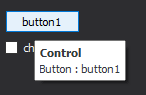
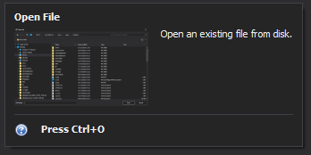

Tooltip
Provides a flexible mechanism to display contextual information when users hover over UI elements. The PhiRobotics UI library supports both standard text tooltips and rich, fully customizable tooltips.
Overview
- IToolTipController – Manages tooltip display and behavior.
- IToolTipControlClient – Supplies tooltip content dynamically for controls.
- IToolTipControlInfo – Represents standard tooltip data (text, title, type).
- IRichToolTip – Represents advanced tooltip content with multiple elements.
- IToolTipFactory – Creates tooltip-related objects.
This design allows you to:
- Attach tooltips to multiple controls
- Dynamically generate tooltip content
- Use either simple or rich tooltip formats
Tooltip Types
Standard Tooltip
A simple tooltip with:
- Title
- Text content
Use ToolTipTypes.Standard with IToolTipControlInfo.
Rich Tooltip
A structured tooltip that can include:
- Titles
- Text blocks
- Images
- Separators
Use IRichToolTip for advanced scenarios.
Basic Usage
Creating and Assigning a Tooltip Client
IToolTipController controller = toolTipFactory.CreateController();
ToolTipControlClient client = new ToolTipControlClient(toolTipFactory);
// Attach tooltip client to controls
controller.AddClientControl(button1, client);
controller.AddClientControl(checkBox1, client);
Implementing IToolTipControlClient
class ToolTipControlClient : IToolTipControlClient
{
private readonly IToolTipControlInfo toolTipInfo;
public ToolTipControlClient(IToolTipFactory factory)
{
toolTipInfo = factory.CreateControlInfo();
toolTipInfo.Title = "Control";
toolTipInfo.ToolTipType = ToolTipTypes.Standard;
}
public bool ToolTipsEnabled => true;
public IToolTipControlInfo GetToolTipInfo(Control clientControl, Point point)
{
if (clientControl is Button button)
{
toolTipInfo.Text = "Button: " + button.Text;
toolTipInfo.Object = clientControl;
return toolTipInfo;
}
else if (clientControl is CheckBox checkBox)
{
toolTipInfo.Text = "CheckBox: " + checkBox.Text;
toolTipInfo.Object = clientControl;
return toolTipInfo;
}
return null;
}
}


Creating a Rich Tooltip
private IRichToolTip CreateToolTip(IToolTipFactory factory)
{
IRichToolTip toolTip = factory.CreateToolTip();
toolTip.Items.AddTitle("Open File");
var content = toolTip.Items.Add("Open an existing file from disk.");
content.Image = Resources.OpenFile;
toolTip.Items.AddSeparator();
var footer = toolTip.Items.AddTitle("Press Ctrl+O");
footer.Image = Resources.HelpIcon;
return toolTip;
}

When to Use Rich Tooltips
Use IRichToolTip when:
- You need to display images or icons.
- You want structured information (sections, headers).
- You want a more visually engaging tooltip.